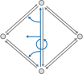
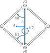

|
Polygon Mesh Processing Library
|
This section provides a hands-on tutorial showing the basic usage of PMP. For a thorough introduction to polygon mesh processing we refer to the book of Botsch et al. [3].
In general, a polygonal surface mesh is composed of vertices, edges and faces as well as the incidence relationships between them. pmp::SurfaceMesh stores the connectivity information based on halfedges, i.e., pairs of directed edges with opposing direction. To be more precise:
The halfedge connectivity is illustrated in the figure below:

In the following sections we describe the basic usage of pmp::SurfaceMesh by means of simple example programs and code excerpts.
The very basic usage of pmp::SurfaceMesh is demonstrated in the example below. The program first instantiates a pmp::SurfaceMesh object as well as four vertex handles. These handles, as well as the handles for the other mesh entities Halfedge, Edge and Face basically indices. Four vertices are added to the mesh, as well as four triangular faces composing a tetrahedron. Finally, the number of vertices, edges, and faces is printed to standard output.
In order to sequentially access mesh entities pmp::SurfaceMesh provides iterators for each entity type:
Similar to iterators, pmp::SurfaceMesh also provides circulators for the ordered enumeration of all incident vertices, halfedges, or faces around a given face or vertex. The example below demonstrates the use of iterators and circulators for computing the mean valence of a mesh.
Attaching additional attributes to mesh entities is important for many applications. pmp::SurfaceMesh supports properties by means of synchronized arrays that can be (de-)allocated dynamically at run-time. Property arrays are also used internally, e.g., to store vertex coordinates. The example program below shows how to access vertex coordinates through the pre-defined point property.
The dynamic (de-)allocation of properties at run-time is managed by a set of four different functions.
Add a new property of a specific type for a given entity. Example:
Get a handle to an existing property. Example:
Get or add: Return a handle to an existing property if a property of the same type and name exists. If there is no such property, a new one is allocated and its handle is returned. Example:
Remove a property given its handle:
Functions that allocate a new property take an optional default value for the property as a second argument. Example:
The code excerpt below demonstrates how to allocate, use and remove a custom edge property.
Commonly used connectivity queries such as retrieving the next halfedge or the target vertex of an halfedge are illustrated below.

pmp::SurfaceMesh also offers higher-level topological operations, such as performing edge flips, edge splits, face splits, or halfedge collapses. The figure below illustrates some of these operations.

The corresponding member functions and their syntax is demonstrated in the pseudo-code below.
When entities are removed from the mesh due to topological changes, the member function pmp::SurfaceMesh::garbage_collection() has to be called in order to ensure the consistency of the data structure.
All I/O operations are handled by the pmp::read() and pmp::write() functions. They take a mesh, a file path, and optional pmp::IOFlags as an argument.
We currently support reading and writing several standard file formats: OFF, OBJ, STL. See the reference documentation for the pmp::read() and pmp::write() functions for details on which format supports reading / writing which type of data.
A simple example reading and writing a mesh is shown below.
The pmp-library supports some level of interoperability with Eigen. The pmp::Matrix and pmp::Vector classes can be constructed/assigned from Eigen matrix/vector types. In addition, it possible to cast the pmp::Matrix and pmp::Vector classes to Eigen.
Example for construction:
Example for assignment:
Example for cast:
See the reference documentation for pmp::Matrix and pmp::Vector for more details.